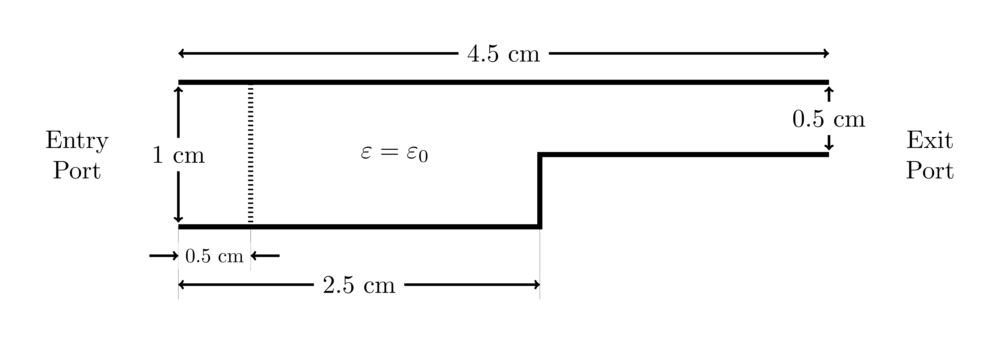
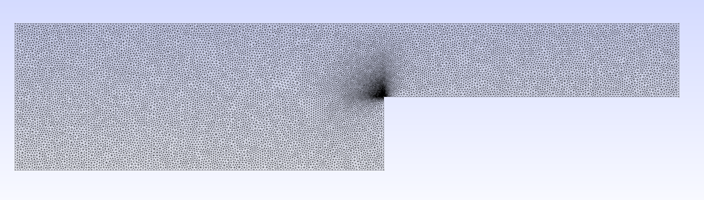
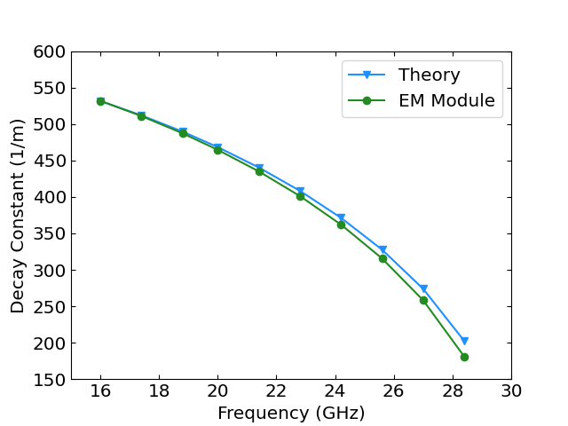
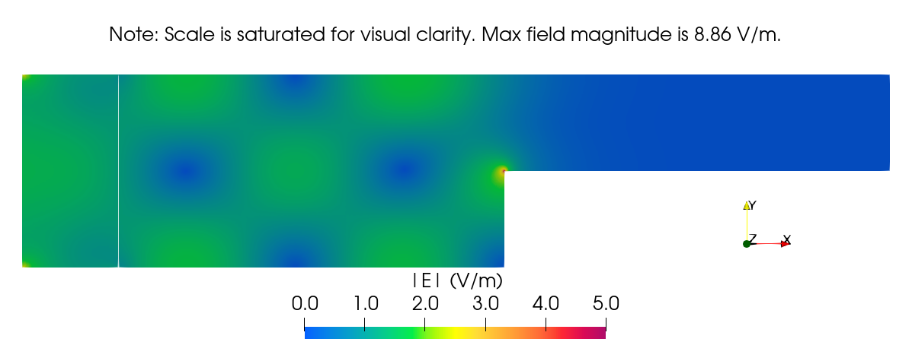
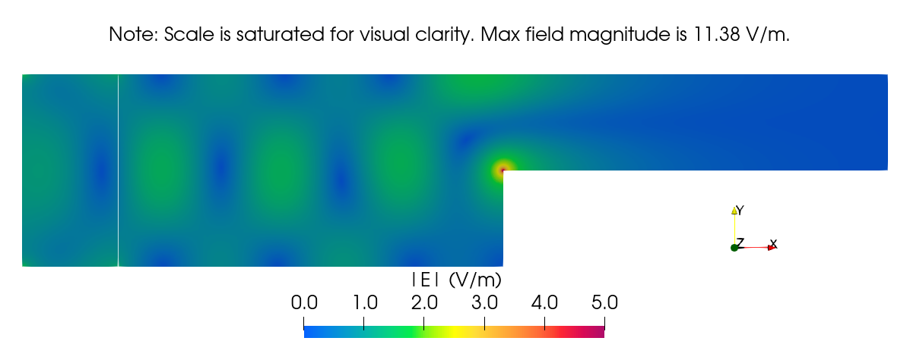
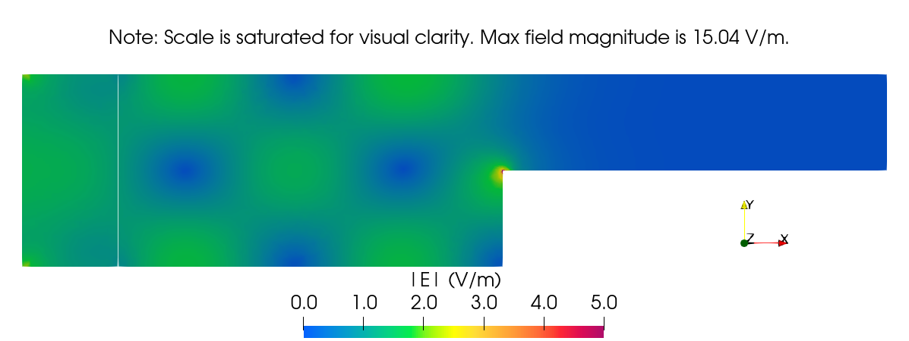
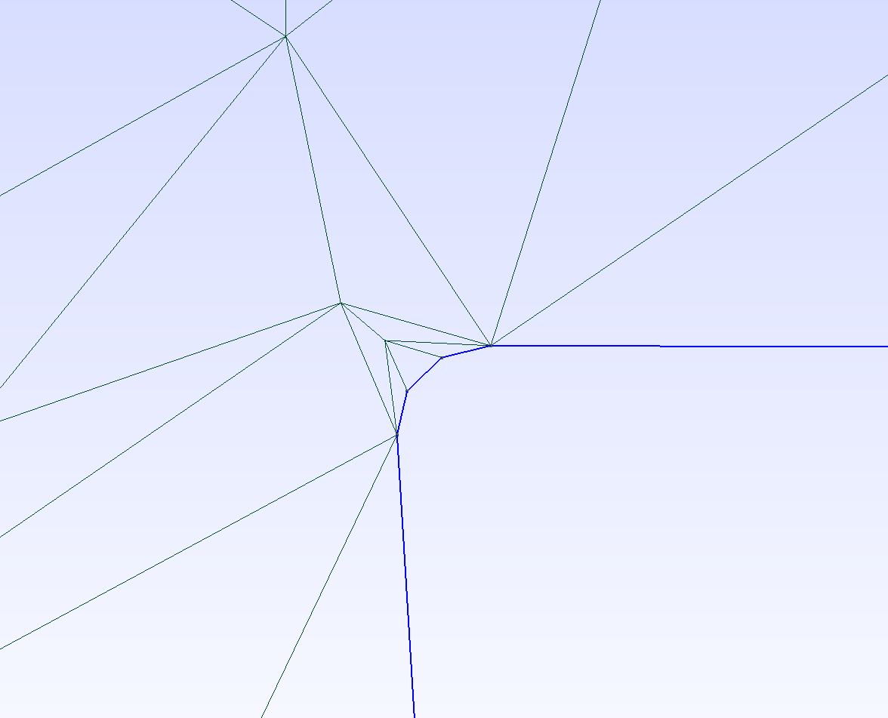

Evanescent Wave Decay Benchmark
This document describes the evanescent wave decay benchmark / validation test for the electromagnetics module. Below is a summary of the test, along with relevant background theory, results, and the test input file for review.
Model Geometry
The domain geometry for this case is shown below:

Figure 1: Evanescent wave decay benchmark geometry.
Note that the 0.5 cm wide region to the left of the dashed line is the location of a volumetric current source used to excite the propagating wave.
Governing Equations and Boundary Conditions
In this simulation, both the real and imaginary components of the electric field wave will be simulated separately as vector finite element variables (with the magnitude displayed in Figure 4 and Figure 5), but the frequency-domain electric field wave equation in general is given by:
where
is the complex electric field vector in V/m,
is the vacuum magnetic permeability of the medium in H/m,
is the electric permittivity of the medium in F/m,
is the operating frequency in rad/s
is the external current density in A/, and
is the imaginary unit ().
These terms are represented by the CurlCurlField, VectorFunctionReaction, and VectorCurrentSource objects, respectively. The current source in this study is applied in the -direction and only on the real component, so in 2D we have
where
is the real current density component in the direction,
is the imaginary current density component in the direction, and
and are Cartesian unit vectors in the and directions, respectively.
At the entry and exit ports, this model uses the VectorEMRobinBC object. This is given by
where
is the incoming electric field vector (set to zero since the wave is excited by a current source),
is a function containing the condition coefficients (in this case, the wave number of the excited wave ), and
is the boundary normal vector.
Model Parameters
Important constant model parameters are shown below in Table 1. Note the following:
The electric permittivity mentioned above is related to the relative permittivity mentioned below using the relation where is the vacuum electric permittivity.
The operating frequency is related to below using the relation .
Table 1: Constant model parameters for the evanescent wave decay benchmark study.
| Parameter (unit) | Value(s) |
|---|---|
| Current Source Magnitude, (A/) | 1 |
| Operating frequency, (GHz) | 16 - 28.4 |
| Relative permittivity, (-) | 1 |
| Vacuum electric permittivity, (F/m) | |
| Vacuum magnetic permeability, (H/m) |
Calculated parameters needed for the boundary conditions (the wave number in the direction of propagation of the traveling wave in a 2D waveguide) were calculated using the following equation (more information in (Griffiths, 1999)):
where:
is the speed of light (or m/s).
Using the 20 GHz operating frequency presented in Figure 4, the value for used in the input file shown below is
Mesh
The mesh used in this study was created in Gmsh, using the geometry shown above in Figure 1. The .geo file used to create this mesh is shown at the end of this section. To reproduce the corresponding .msh file in a terminal, ensure that gmsh is installed and available in the system PATH and simply run the following command at the location of waveguide_discontinuous.geo:
gmsh -2 waveguide_discontinuous.geo -clscale 0.004 -order 2 -algo del2d
As of Gmsh 4.6.0, this command produces a second order 2D mesh with an element size factor of 0.004 (not including the point-wise scaling factors contained within the mesh file) using a Delaunay algorithm. The unstructured, triangular mesh contains 67028 nodes and 33822 elements. An image of the result is shown in Figure 2. Note that the second order mesh is required because we are using NEDELEC_ONE vector finite elements for all solution variables.

Figure 2: Mesh used in the evanescent wave decay benchmark study.
Mesh File
// Discontinuous waveguide mesh for evanescent wave decay benchmark
// Waveguide length = 4.5 cm
// Waveguide width (entry) = 1 cm
// Waveguide width (exit) = 0.5 cm
// Discontinuity location = 2.5 cm
// Entry source width = 0.5 cm
// Entry source height = 1 cm
// Entry location (lower left coordinate) = (0.0, 0.0)
// Use global scaling factor of 0.004 in order to reproduce benchmark mesh in
// documentation, and use a factor of 0.01 to reproduce the test mesh
// Define corners and important points in the domain (with scaling factors)
Point(1) = {-0, 0, 0, 1.0};
Point(2) = {0.005, 0, 0, 1.0};
Point(3) = {0.025, 0, 0, 1.0};
Point(4) = {0, 0.010, 0, 1.0};
Point(5) = {0.005, 0.010, 0, 1.0};
Point(6) = {0.045, 0.010, 0, 1.0};
Point(7) = {0.045, 0.005, 0, 1.0};
Point(8) = {0.025, 0.005, 0, 0.0025};
// Connect the outer points
Line(1) = {1, 4};
Line(2) = {4, 5};
Line(3) = {5, 6};
Line(4) = {6, 7};
Line(5) = {7, 8};
Line(6) = {8, 3};
Line(7) = {3, 2};
Line(8) = {2, 1};
// Connect the dividing line between the source region and general vacuum region
Line(9) = {2, 5};
// Define loop for source region
Line Loop(1) = {1, 2, -9, 8};
Plane Surface(1) = {1};
// Define loop for general vacuum region
Line Loop(2) = {3, 4, 5, 6, 7, 9};
Plane Surface(2) = {2};
// Setup physical domains with labels
Physical Surface("source") = {1};
Physical Surface("vacuum") = {2};
// Setup sidesets
Physical Line("walls") = {3, 2, 8, 7, 6, 5};
Physical Line("port") = {1};
Physical Line("exit") = {4};
Evanescent Wave Decay Theory
If a wave propagating within a waveguide reaches a point where it can no longer propagate (such as in the case of a discontinuity), then the majority of the wave energy will reflect and proceed to propagate in the opposite direction. Some small fraction is transmitted, however, and then decays since no wave can form. The characteristic evanescent wave decay constant is given by
The cutoff frequency is the lowest frequency at which a wave can propagate in a given geometry. For this 2D case, that is given by
In this benchmark, the decay constant of the wave in the "cutoff" region was calculated and compared to the theory above, given the geometry of the waveguide being modeled. For more information on cutoff frequency and evanescent wave decay, please see (Griffiths, 1999).
Input File
# Evanescent wave decay benchmark
# frequency = 20 GHz
# eps_R = 1.0
# mu_R = 1.0
[Mesh<<<{"href": "../../../syntax/Mesh/index.html"}>>>]
[fmg]
type = FileMeshGenerator<<<{"description": "Read a mesh from a file.", "href": "../../../source/meshgenerators/FileMeshGenerator.html"}>>>
file<<<{"description": "The filename to read."}>>> = waveguide_discontinuous.msh
[]
[]
[Functions<<<{"href": "../../../syntax/Functions/index.html"}>>>]
[waveNumberSquared]
type = ParsedFunction<<<{"description": "Function created by parsing a string", "href": "../../../source/functions/MooseParsedFunction.html"}>>>
expression<<<{"description": "The user defined function."}>>> = '(2*pi*20e9/3e8)^2'
[]
[omegaMu]
type = ParsedFunction<<<{"description": "Function created by parsing a string", "href": "../../../source/functions/MooseParsedFunction.html"}>>>
expression<<<{"description": "The user defined function."}>>> = '2*pi*20e9*4*pi*1e-7'
[]
[beta]
type = ParsedFunction<<<{"description": "Function created by parsing a string", "href": "../../../source/functions/MooseParsedFunction.html"}>>>
expression<<<{"description": "The user defined function."}>>> = '2*pi*20e9/3e8'
[]
[curr_real]
type = ParsedVectorFunction<<<{"description": "Returns a vector function based on string descriptions for each component.", "href": "../../../source/functions/MooseParsedVectorFunction.html"}>>>
expression_y<<<{"description": "y-component of function."}>>> = 1.0
[]
[curr_imag] # defaults to '0.0 0.0 0.0'
type = ParsedVectorFunction<<<{"description": "Returns a vector function based on string descriptions for each component.", "href": "../../../source/functions/MooseParsedVectorFunction.html"}>>>
[]
[]
[Variables<<<{"href": "../../../syntax/Variables/index.html"}>>>]
[E_real]
family<<<{"description": "Specifies the family of FE shape functions to use for this variable"}>>> = NEDELEC_ONE
order<<<{"description": "Specifies the order of the FE shape function to use for this variable (additional orders not listed are allowed)"}>>> = FIRST
[]
[E_imag]
family<<<{"description": "Specifies the family of FE shape functions to use for this variable"}>>> = NEDELEC_ONE
order<<<{"description": "Specifies the order of the FE shape function to use for this variable (additional orders not listed are allowed)"}>>> = FIRST
[]
[]
[Kernels<<<{"href": "../../../syntax/Kernels/index.html"}>>>]
[curlCurl_real]
type = CurlCurlField<<<{"description": "Weak form term corresponding to $\\nabla \\times (a \\nabla \\times \\vec{E})$.", "href": "../../../source/kernels/CurlCurlField.html"}>>>
variable<<<{"description": "The name of the variable that this residual object operates on"}>>> = E_real
[]
[coeff_real]
type = VectorFunctionReaction<<<{"description": "Kernel representing the contribution of the PDE term $sign * f * u$, where $f$ is a function coefficient and $u$ is a vector variable.", "href": "../../../source/kernels/VectorFunctionReaction.html"}>>>
variable<<<{"description": "The name of the variable that this residual object operates on"}>>> = E_real
function<<<{"description": "Function coefficient multiplier for field."}>>> = waveNumberSquared
sign<<<{"description": "Sign of boundary term in weak form."}>>> = negative
[]
[source_real]
type = VectorCurrentSource<<<{"description": "Kernel to calculate the current source term in the Helmholtz wave equation.", "href": "../../../source/kernels/VectorCurrentSource.html"}>>>
variable<<<{"description": "The name of the variable that this residual object operates on"}>>> = E_real
component<<<{"description": "Component of field (real or imaginary)."}>>> = real
source_real<<<{"description": "Current Source vector, real component"}>>> = curr_real
source_imag<<<{"description": "Current Source vector, imaginary component"}>>> = curr_imag
function_coefficient<<<{"description": "Function coefficient multiplier for current source (normally $\\omega$ or $\\omega \\cdot \\mu$)."}>>> = omegaMu
block<<<{"description": "The list of blocks (ids or names) that this object will be applied"}>>> = source
[]
[curlCurl_imag]
type = CurlCurlField<<<{"description": "Weak form term corresponding to $\\nabla \\times (a \\nabla \\times \\vec{E})$.", "href": "../../../source/kernels/CurlCurlField.html"}>>>
variable<<<{"description": "The name of the variable that this residual object operates on"}>>> = E_imag
[]
[coeff_imag]
type = VectorFunctionReaction<<<{"description": "Kernel representing the contribution of the PDE term $sign * f * u$, where $f$ is a function coefficient and $u$ is a vector variable.", "href": "../../../source/kernels/VectorFunctionReaction.html"}>>>
variable<<<{"description": "The name of the variable that this residual object operates on"}>>> = E_imag
function<<<{"description": "Function coefficient multiplier for field."}>>> = waveNumberSquared
sign<<<{"description": "Sign of boundary term in weak form."}>>> = negative
[]
[source_imaginary]
type = VectorCurrentSource<<<{"description": "Kernel to calculate the current source term in the Helmholtz wave equation.", "href": "../../../source/kernels/VectorCurrentSource.html"}>>>
variable<<<{"description": "The name of the variable that this residual object operates on"}>>> = E_imag
component<<<{"description": "Component of field (real or imaginary)."}>>> = imaginary
source_real<<<{"description": "Current Source vector, real component"}>>> = curr_real
source_imag<<<{"description": "Current Source vector, imaginary component"}>>> = curr_imag
function_coefficient<<<{"description": "Function coefficient multiplier for current source (normally $\\omega$ or $\\omega \\cdot \\mu$)."}>>> = omegaMu
block<<<{"description": "The list of blocks (ids or names) that this object will be applied"}>>> = source
[]
[]
[BCs<<<{"href": "../../../syntax/BCs/index.html"}>>>]
[absorbing_left_real]
type = VectorEMRobinBC<<<{"description": "First order Robin-style Absorbing/Port BC for vector variables.", "href": "../../../source/bcs/VectorEMRobinBC.html"}>>>
variable<<<{"description": "The name of the variable that this residual object operates on"}>>> = E_real
component<<<{"description": "Variable field component (real or imaginary)."}>>> = real
beta<<<{"description": "Scalar wave number."}>>> = beta
coupled_field<<<{"description": "Coupled field variable."}>>> = E_imag
mode<<<{"description": "Mode of operation for VectorEMRobinBC."}>>> = absorbing
boundary<<<{"description": "The list of boundary IDs from the mesh where this object applies"}>>> = 'port'
[]
[absorbing_right_real]
type = VectorEMRobinBC<<<{"description": "First order Robin-style Absorbing/Port BC for vector variables.", "href": "../../../source/bcs/VectorEMRobinBC.html"}>>>
variable<<<{"description": "The name of the variable that this residual object operates on"}>>> = E_real
component<<<{"description": "Variable field component (real or imaginary)."}>>> = real
beta<<<{"description": "Scalar wave number."}>>> = beta
coupled_field<<<{"description": "Coupled field variable."}>>> = E_imag
mode<<<{"description": "Mode of operation for VectorEMRobinBC."}>>> = absorbing
boundary<<<{"description": "The list of boundary IDs from the mesh where this object applies"}>>> = 'exit'
[]
[absorbing_left_imag]
type = VectorEMRobinBC<<<{"description": "First order Robin-style Absorbing/Port BC for vector variables.", "href": "../../../source/bcs/VectorEMRobinBC.html"}>>>
variable<<<{"description": "The name of the variable that this residual object operates on"}>>> = E_imag
component<<<{"description": "Variable field component (real or imaginary)."}>>> = imaginary
beta<<<{"description": "Scalar wave number."}>>> = beta
coupled_field<<<{"description": "Coupled field variable."}>>> = E_real
mode<<<{"description": "Mode of operation for VectorEMRobinBC."}>>> = absorbing
boundary<<<{"description": "The list of boundary IDs from the mesh where this object applies"}>>> = 'port'
[]
[absorbing_right_imag]
type = VectorEMRobinBC<<<{"description": "First order Robin-style Absorbing/Port BC for vector variables.", "href": "../../../source/bcs/VectorEMRobinBC.html"}>>>
variable<<<{"description": "The name of the variable that this residual object operates on"}>>> = E_imag
component<<<{"description": "Variable field component (real or imaginary)."}>>> = imaginary
beta<<<{"description": "Scalar wave number."}>>> = beta
coupled_field<<<{"description": "Coupled field variable."}>>> = E_real
mode<<<{"description": "Mode of operation for VectorEMRobinBC."}>>> = absorbing
boundary<<<{"description": "The list of boundary IDs from the mesh where this object applies"}>>> = 'exit'
[]
[]
[Preconditioning<<<{"href": "../../../syntax/Preconditioning/index.html"}>>>]
[SMP]
type = SMP<<<{"description": "Single matrix preconditioner (SMP) builds a preconditioner using user defined off-diagonal parts of the Jacobian.", "href": "../../../source/preconditioners/SingleMatrixPreconditioner.html"}>>>
full<<<{"description": "Set to true if you want the full set of couplings between variables simply for convenience so you don't have to set every off_diag_row and off_diag_column combination."}>>> = true
[]
[]
[Executioner<<<{"href": "../../../syntax/Executioner/index.html"}>>>]
type = Steady
solve_type = 'NEWTON'
petsc_options_iname = '-pc_type'
petsc_options_value = 'lu'
[]
[Outputs<<<{"href": "../../../syntax/Outputs/index.html"}>>>]
exodus<<<{"description": "Output the results using the default settings for Exodus output."}>>> = true
print_linear_residuals<<<{"description": "Enable printing of linear residuals to the screen (Console)"}>>> = true
[]
[Debug<<<{"href": "../../../syntax/Debug/index.html"}>>>]
show_var_residual_norms<<<{"description": "Print the residual norms of the individual solution variables at each nonlinear iteration"}>>> = true
[]Solution and Discussion
Results from the input file shown above compared to the theory over a range of frequencies are shown below in Figure 3. The decay constants shown in the plot were determined via an exponential fit of the electric field magnitude behavior taken down the center of the narrower portion of the waveguide (). Note that the results are in excellent agreement with theory overall, with the relative error having an average value of 2.7% and reaching a maximum of ~10.6% by 28.4 GHz. This increasing deviation could be due to the mesh resolution compared to the wavelength of the traveling wave. At 16 GHz, there are approximately 4.69 elements per wavelength (considering our mesh element factor of 0.004 m). At 28.4 GHz, there are only approximately 2.64 elements per wavelength, potentially leading to an overall loss in fidelity due to poor resolution.
However, increasing the wavelength resolution for the 28.4 GHz case to approximately the same level as in the 16GHz case doesn't lead to a corresponding decrease in relative error. What else could be going on here? Returning to the idea of a cutoff frequency, (where ) for the narrower section of the waveguide is ~30 GHz. As the operating frequency approaches the cutoff frequency, attenuation of the wave is lessened as shown in Figure 5, which leads to a slight deviation from the ideal decay rate shown here.

Figure 3: Results of the evanescent wave decay benchmark study.
Field results at the 20GHz operating frequency outlined earlier are shown below in Figure 4. The interference pattern shown in the left region is due to the wave reflection after reaching the discontinuity. Also note that the singularity seen at the sharp reentrant corner is a byproduct of the numerical model used, and isn't necessarily physical (though some component of that sort of field enhancement might be - it is a well known issue to separate out the two effects). The surface normal is ill-defined at the corner node, and thus the boundary condition suggests that the current must change direction instantaneously with the modeled conducting surface. This results in a possibly infinite electric field magnitude. Note that all color bars in the presented results are scaled for clarity due to the presence of the singularity. Maximum field magnitude at the singularity is noted on each figure.
Rounding the corner is a common way to try to avoid this issue (as mentioned in (Jin, 2014) and others), and the impact of a round corner with radius of 10 (seen in Figure 7) is shown in Figure 6. Because the rounded corner is not perfectly round, but made up of tiny line segments, there will still be some opportunities for field singularities to occur. Indeed, the peak electric field local to the singularity location is higher than in Figure 4; however, the impact of the singularity on the surrounding field calculation is reduced. Regardless of the geometry adjustment, this suggests the impact of numerical singularities on the calculated global electric field magnitude are extremely local (made even more so due to the level of local refinement used here) due to the nature of the finite element method (minimizing global error while possibly allowing local ones). Away from this singularity, this property allows us to successfully use this model to examine evanescent wave decay in the smaller waveguide region on the right.

Figure 4: Field results of the evanescent wave decay benchmark study at 20GHz.

Figure 5: Field results of the evanescent wave decay benchmark study at 28.4GHz. Note the increased electric field strength in the narrower section compared to 20GHz.

Figure 6: Field results of the evanescent wave decay benchmark study at 20GHz, using a rounded corner instead of a sharp one.

Figure 7: Rounded corner in waveguide geometry.